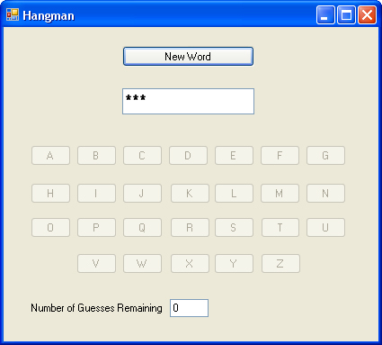

A C# .NET Hangman Game
To put all our C# string theory into practice, we've developed a simple word-guessing game, popularly known as hangman in the UK. The project is amongst the download files for this course. Look for the folder called Hangman. Inside of this, you'll find a hangman.vbproj. Open up this project in your C# .NET software. Run the programme and you should see this:

After clicking the New Word button, you click on letters of the alphabet. If the word contains the letter you clicked on, it appears in the word. If you guess incorrectly then you lose a life. The game is over when you either guess the word, or run out of lives.
Our version contains words of only three letters, so that you can see what's going on. There are also message boxes, used to display the words. This is for testing purposes.
Open up the code for the project and you'll see that it is heavily commented. We won't go through the code step-by-step here, but examine the code and the comments for yourself. Pay particular attention to these C# string methods:
IndexOf
Insert
Remove
Substring
ToUpper
If you are unsure about any of them, go back a few pages and look at the explanation in this book.
As you're going through the code, though, bear in mind that what the programme is trying to do is manipulate strings and characters, using as many inbuilt C# methods as possible. This is the kind of manipulation that you need to be able to do in your own programming.
Once you've got a good idea of how the programme works, try this exercise.
Exercise
The game only uses words of three letters, at the moment. There are ten words
in all. Amend the code to use words of nine letters. You can, of course, use
your own. But here's 10 nine letter words for you, if you're stuck. They are
all countries:
Argentina
Australia
Greenland
Guatemala
Indonesia
Lithuania
Macedonia
Mauritius
Nicaragua
Venezuela
For this exercise, it's not just a question of changing the words in the array. Can you see what else you need to change?